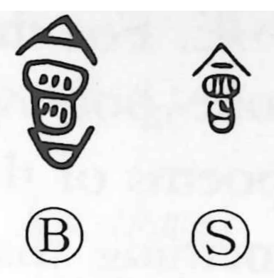

Explanation
会 abbreviates 會, a covered cooking vessel. The full form shows the pot or steamer with its lid above. Food is put together inside and cooked under the cover.
The gathering of different ingredients into one preparation gives the connection with collecting and coming together. A meal brings several things into a shared whole; the word extends to people gathering and meeting. The vessel's cover also fits the body beneath it, joining the parts of the apparatus.
会 consequently names an assembly, a meeting place, or an occasion when people encounter one another. Bringing separate amounts together gives a total, while a meeting of circumstances can become an opportunity. The familiar social meanings continue the bringing-together action of the cooking scene.